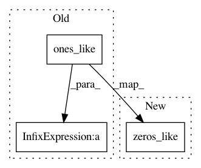

f8e1c6af00330faeaa386e951d82a206ba735bfa,model.py,Artgan,_build_model,#Artgan#,72
Before Change
self.gener_loss = tf.add_n(self.output_photo_gener_loss.values())
// Compute generator accuracies.
self.output_photo_gener_acc = {key: tf.reduce_mean(tf.cast(x=(pred > tf.ones_like(pred)*0.5),
dtype=tf.float32)) * scale_weight[key]
for key, pred in zip(self.output_photo_discr_predictions.keys(),
self.output_photo_discr_predictions.values())}
After Change
self.gener_loss = tf.add_n(self.output_photo_gener_loss.values())
// Compute generator accuracies.
self.output_photo_gener_acc = {key: tf.reduce_mean(tf.cast(x=(pred > tf.zeros_like(pred)),
dtype=tf.float32)) * scale_weight[key]
for key, pred in zip(self.output_photo_discr_predictions.keys(),
self.output_photo_discr_predictions.values())}
In pattern: SUPERPATTERN
Frequency: 3
Non-data size: 3
Instances
Project Name: CompVis/adaptive-style-transfer
Commit Name: f8e1c6af00330faeaa386e951d82a206ba735bfa
Time: 2018-09-26
Author: dimakot55@gmail.com
File Name: model.py
Class Name: Artgan
Method Name: _build_model
Project Name: geomstats/geomstats
Commit Name: daf01e8fc4b531174cf5fd4478fa587f6923c132
Time: 2018-02-11
Author: ninamio78@gmail.com
File Name: geomstats/special_orthogonal_group.py
Class Name: SpecialOrthogonalGroup
Method Name: rotation_vector_from_quaternion
Project Name: geomstats/geomstats
Commit Name: daf01e8fc4b531174cf5fd4478fa587f6923c132
Time: 2018-02-11
Author: ninamio78@gmail.com
File Name: geomstats/special_orthogonal_group.py
Class Name: SpecialOrthogonalGroup
Method Name: quaternion_from_rotation_vector